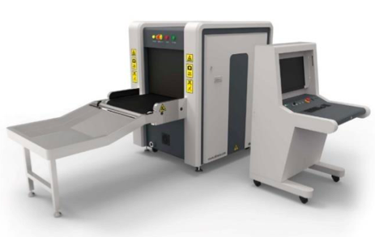
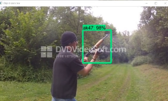
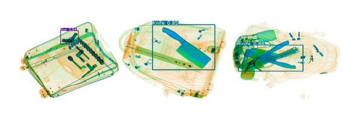
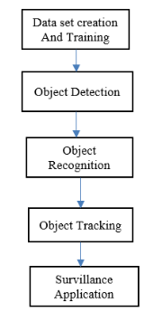
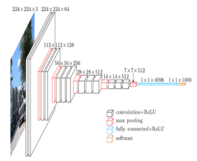

Main Problem
There were situations when people get into danger in public locations, some involving weaponry, and resulting in injuries or deaths. People have built visual detection machines or AI image detection programs to prevent these situations from happening and keeping the environment safe. The visual detection machines have been widely used in airports and bus and train stations. In this project, we will be discussing how Computer Vision prevents accidents involving weapons.
Introduction
Computer Vision programs for weapon detection can scan baggage, factory machines, etc for contraband in order to keep environments safe. They can use algorithms such as edge detection and deep learning to find contraband in luggages or areas, as well as X-rays. The methods the programs use include model design, feature extraction, auto-border regression, model deployment, and metrics.
Previous Similar Projects
There were similar projects which were created for computer vision for weapon safety. An example would be, like mentioned before, security checks were operated to scan passengers' luggage for contraband using X-rays, which have average precisions of 99.1% and effectively improves effiency. X-rays can quickly scan passengers' luggages, and reconstruct images according to materials in the luggage. However, judgement and decision making work would be manual, and low security personnel experience, personnel level, and mental state can eventually lead to a disadvantage.

Another similar project were video surveillance systems. They have used algorithms such as CNN based SSH and fast RCNN algorithms, with the system playing a role in monitors.
Speaking of video survailance systems, a project called CCTV, or Closed Circuit Television, was a monitoring and surveillance tool to detect crimes, social offence, and abnormal activity, such as missing people and weapon misuse, from a scene to present to courts and television screens for evidence, using a camera to record the scene and an operator to monitor the actions in the scene. Gun detection is currently significant for CCTV's system, as it is often used as weapons for different crimes, and it's illegal to carry a gun out in public in some countries, making it important for safety concern.

One project involving X-rays, an AI recognition system, which won the Gold Award in 2018, was designed to alert and analyze contraband in X-ray images through training.
Other similar projects were designed to use deep neural network models and successfully detect various objects in X-ray images, and another recorded project introduced and applied security networking concepts, identification, and information into the direction of intelligent screening. Like so:

Color X-ray images were applied with security screening, with objects showing different color characteristics in the X-ray image. This caused the precision to rise to nearly perfect, along with the X-ray feature of the computer vision in general.
Parts to make the machinery work
One part which was used to make computer vision for weapon detection work was the Fast RCNN model. That model was proposed and based on RCNN. This method does not require candidate frames to be included in the Deep Learning model. However, only certain training images are tested in the model, automatically mapping the coordinates at the feature level and speeding up the detection of the model. The accuracy of Fast RCNN on dataset PASCAL-VOC 2007 had overall decently increased in percentage, therefore increasing the efficiency as well.
The Faster RCNN algorithm was then introduced, and a module called RPN was designed to make the frames required by the training algorithm. An Anchor was also created to extract candidate frames from RPN at various scales. The ‘RPN + Anchor’ approach in the Faster RCNN replaces the Selective Search approach in the original method, which allows the model to be used efficiently and greatly improves the speed.
SSD, or Single Shot Detection, is also used.
Object detection and tracking methods work with datasets being created, trained, and deployed to object detection algorithms. A suitable detection algorithm is chosen for weapon detection. The method would examine and solve the problem, using various machine-learning models such as not only Region Convolutional Neural Network, but also a method called Single Shot Detection.

The fast RCNN model has been used by both security checks and survillence machinery.
The CNN and RCNN portion of the project has two networks, one to to create relation proposals and other for network for detection. Selective search approach is used to create region proposals, with the RPN network ranking anchors and region boxes.
CCTV's GDS has used color-based segmentation and interest point detectors, as well as Harris interest point detectors and FREAK descriptors to detect features.
Its color based segmentation feature involved k-means clustering algorithms to separate other objects, then apply morphological processing on each object to bridge small gaps and extract boundaries. Interest point features are then extracted and matched with a stored descriptor to find out if the footage object is similar to a gun. It sets off an alarm if the accuracy is over 50%.

Positive Results
Like stated before, the previous machines have made the environment safer with them scanning multiple X-ray images, and accurately detecting the weapons.
One of the projects involving computer vision for weapon detection provided an ecological solution when utilizing various methods such as security networking concepts.
The machine’s average precision is nearly perfect when scanning the interior of a carry on bag via X-rays.
CCTV had also planned out a GDS, or a gun detection system, for their surveilance system, which would look for guns in the video feed and prepare an alarm upon detecting a gun in the scene. The operator would look at the scene and examine it for actual weapons in the video, and decide whether to accept or discard the video. GDS had provided good assistance to CCTV operators in long hours, and made it easier to monitor multiple feeds at one screen.
Challenges
While the computer vision for weapon detection have made environments safer, there has been challenges with it. Judgement and decision making when scanning baggage with X-rays required manual work. Low experience and mental state of security personnels and inspectors have affected the status of contraband detection.
Long hours of work would lead to exhaustion of workers, and therefore affect precision. The constant increase of passenger traffic also tires out computer vision machinery and personnels.
Another challenge would be distortion when attempting to detect weapons and environmental effects such as shadows, as Tiwari and Verma state in their article.
It is also sometimes not very easy for one CCTV operator to monitor every activity in one scene, since the detection of crimes proportions the operator's focus on every action in the video, and the ratio for operator to screen, run on multiple videos on the same screen, and environmental condition of the operation room are all weak. The operator's accuracy also isn't perfect 24/7.
Tiwari and Verma also stated that the gun's physical appearance, such as color and shape, is a challenge, since one model of gun can vary from another model by a number due to a variation in body parts. Scale variation can grow due to a distance change from the CCTV in the video, and rotation and view variation changes due to change in orientation of the weapon and its plane.
How it can be improved
People might use different algorithms to improve accuracy of their detection program and complete extraction. The algorithms could also help security personnels with judgement and decision making.
Features and projects would also be created to deal with increasing passenger traffic, since they could quickly scan each passenger’s baggage for contraband.
To improve CCTV's surveillance system, an automation of the crime detection would be installed to reduce operator overload, and an alarm would be created and set off upon the operator detecting the weapon in CCTV's video.
Conclusion
Overall, computer vision for weapon detection can lessen safety accidents and make the environment safe. The programs can use X-rays and algorithms for weapon detection. The methods the program can use could easily help detect contraband from baggages, and with them being in effect, Object detection could be faster and more accurate, and X-rays can greatly increase precision of the object detection when scanning baggage.
Quiz